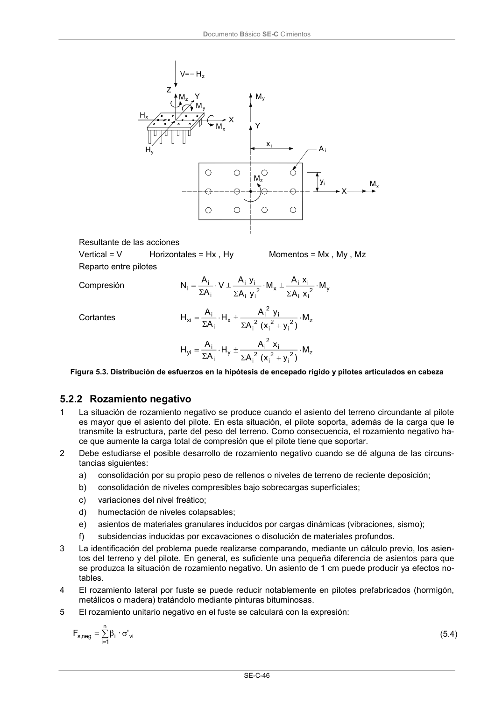

DB-SE-C · 5.2.2 Rozamiento negativo · versión 2019-12-20
SHA256: a71133f4b0dca253e45ea3071c70f2a512354bcc5cd841bf89b1a502f567ac5e · página física 51 de 165 · métodos de encabezado
solo si están cotejados.
Formatos: Markdown · JSON de bloques · PDF p. 51 · imagen PNG
Documento Básico SE-C Cimientos SE-C-46 x Y M X V= H M H H A i i Mz y x y x Y Z z Mz My iy Mx X Resultante de las acciones Vertical = V Horizontales = Hx , Hy Momentos = Mx , My , Mz Reparto entre pilotes Compresión y 2 i i i i x 2 i i i i i i i M x A x A M y A y A V A A N Cortantes z 2 i 2 i 2 i i 2 i x i i xi M ) y x ( A y A H A A H z 2 i 2 i 2 i i 2 i y i i yi M ) y x ( A x A H A A H Figura 5.3. Distribución de esfuerzos en la hipótesis de encepado rígido y pilotes articulados en cabeza 5.2.2 Rozamiento negativo 1 La situación de rozamiento negativo se produce cuando el asiento del terreno circundante al pilote es mayor que el asiento del pilote. En esta situación, el pilote soporta, además de la carga que le transmite la estructura, parte del peso del terreno. Como consecuencia, el rozamiento negativo ha- ce que aumente la carga total de compresión que el pilote tiene que soportar. 2 Debe estudiarse el posible desarrollo de rozamiento negativo cuando se dé alguna de las circuns- tancias siguientes: a) consolidación por su propio peso de rellenos o niveles de terreno de reciente deposición; b) consolidación de niveles compresibles bajo sobrecargas superficiales; c) variaciones del nivel freático; d) humectación de niveles colapsables; e) asientos de materiales granulares inducidos por cargas dinámicas (vibraciones, sismo); f) subsidencias inducidas por excavaciones o disolución de materiales profundos. 3 La identificación del problema puede realizarse comparando, mediante un cálculo previo, los asien- tos del terreno y del pilote. En general, es suficiente una pequeña diferencia de asientos para que se produzca la situación de rozamiento negativo. Un asiento de 1 cm puede producir ya efectos no- tables. 4 El rozamiento lateral por fuste se puede reducir notablemente en pilotes prefabricados (hormigón, metálicos o madera) tratándolo mediante pinturas bituminosas. 5 El rozamiento unitario negativo en el fuste se calculará con la expresión: vi n 1 i i neg ,s ' · F (5.4)
